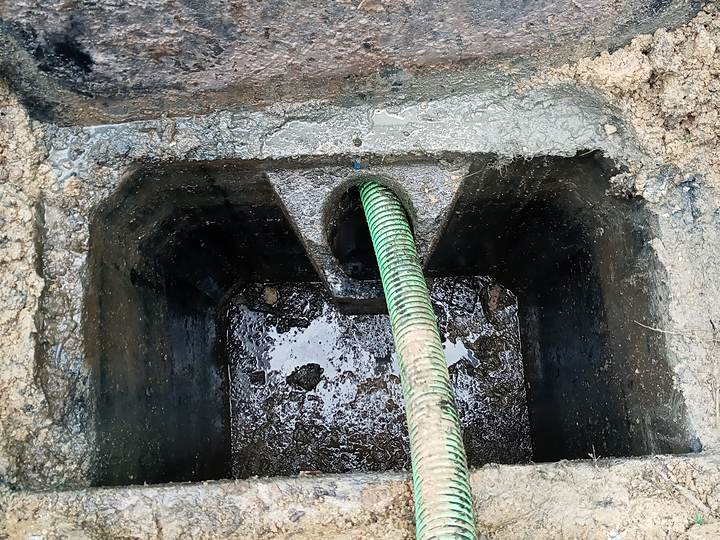
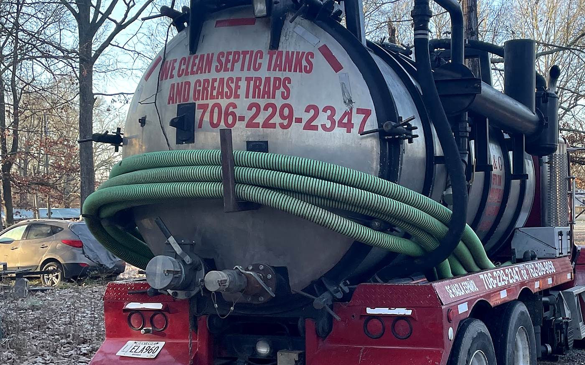
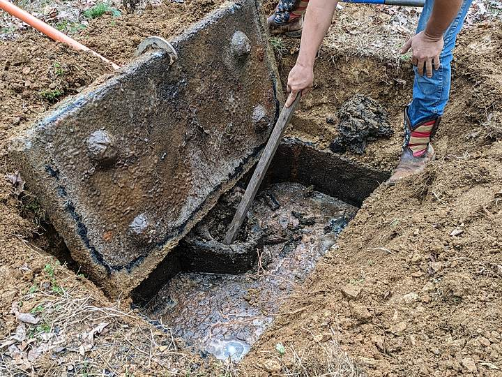
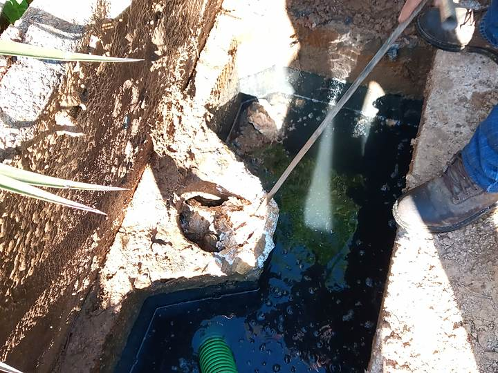
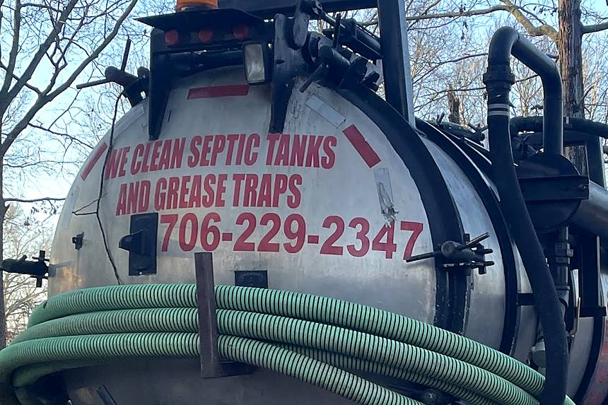
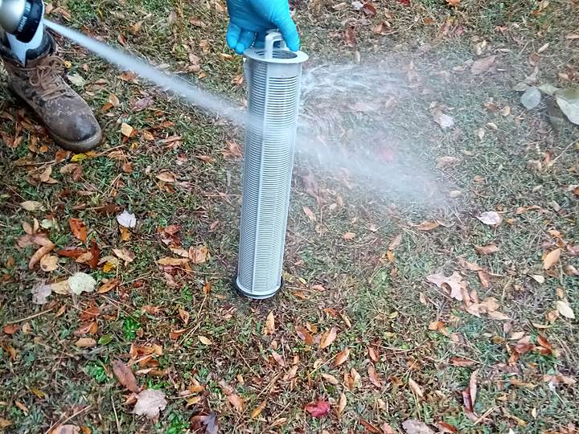
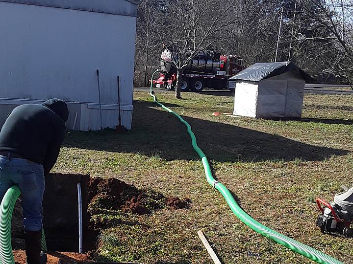
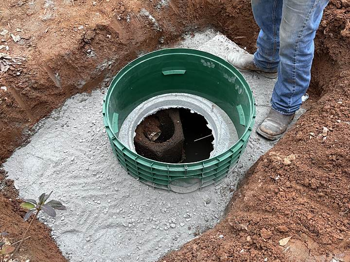

Septic
Septic tank pumping
Residential tank pump-outs. We find the tank, uncover it, pump it down and put your yard back the way we found it.

We pump, snake and clean out septic tanks and grease traps around Dalton and Whitfield County — and we try to get your system flowing again before anyone starts talking about digging up your yard. Georgia-approved septic pumper. Ignacio and his son answer the phone themselves.
Someone answers 7 AM to 9 PM, seven days a week — weekends included.
Before you replace anything
When a tank backs up, the expensive answer is quick and the patient answer takes longer. We’d rather snake the line, clear the filter and pump the tank out properly first, and see whether your system comes back — because quite often it does.
“Ignacio and his son Bryan were knowledgeable, friendly, and hard working, and they were even able to get my field lines unclogged, when most septic tank companies would have just said to replace them. I will only be using them from now on for all of my septic tank needs and I suggest you do the same!!”

What we do
Pumping a tank is the easy half. The part that keeps it working is what happens after the truck is hooked up — the filter, the inlet and outlet, the lines, and whether anyone bothered to rinse the thing out.

Residential tank pump-outs. We find the tank, uncover it, pump it down and put your yard back the way we found it.

Snaked from both sides and washed out before we close it up, so what’s stuck to the walls leaves with the truck instead of settling straight back down.

It’s painted on the side of the truck. If you run a kitchen in or around Dalton and your trap needs pumping, call and ask — we do them.

Cleaned and replaced. A blocked filter is one of the cheapest reasons a healthy system starts backing up into the house — and one of the most missed.

Snaking and clearing blocked lines, including field lines. We’ll tell you honestly if it’s beyond clearing — but we try clearing it first.

Don’t know where your tank is? We’ll locate and uncover it. Tired of digging it up every time? Ask about bringing the lid up to ground level.
We’re a pumping and cleaning outfit — that’s what Georgia lists us for. We don’t install new systems or replace drain fields, and we’ll say so rather than take the job.
What happens when you call
You get Ignacio or Bryan on the phone, and the same two people turn up at the house.
Backing up, slow drains, a smell, standing water, or just due for a pump-out. Tell us what it’s doing and roughly when it started.
Seven days a week, 7 AM to 9 PM. If a competitor is booked out a week and you’re in trouble now, it’s worth asking what we have.
Locate and uncover the tank, pump it down, snake it from both sides, clean the filter and rinse the tank out.
What condition the tank and filter were in, what we cleared, and what you should keep an eye on. Straight, in plain language.
So you don’t have to think about it
A septic tank is the one thing in the house nobody remembers until it reminds them. Get on the calendar and we’ll ring you when you’re coming due, so the next pump-out is something you schedule instead of something that happens to you on a Sunday night.
“What I like most is that they included me on their calendar and will call to remind me to have them come clean my septic tank every two years. That means I don’t have to think about it or fill my calendar with another reminder.”
Who you’re calling
I&G Septic Tank Cleaning Service is Ignacio Guijon’s business, and he works it with his son Bryan. There is no second crew you might get instead, and no subcontractor showing up in an unmarked van. If you booked us, that’s who arrives.
Where we work
We’re based on Valley Brook Drive in Dalton and the State of Georgia lists us as a Whitfield County pumper.
Outside the county? Call and ask — it’s a short conversation and we’ll tell you straight whether we can get to you.
Seven days a week, including weekends.
Septic problems don’t keep business hours, and neither does the phone. Saturday and Sunday calls are ordinary here.
Get it handled
Tell him what the system is doing. If it’s something we can clear, we’ll clear it. If it isn’t, you’ll know that too — and you’ll know it from someone who looked, not someone who guessed.
7 AM–9 PM, seven days. Dalton & Whitfield County, GA.
Leave a name and number and we’ll ring you back.